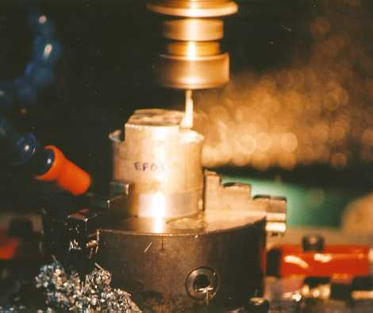

LMP>Research Guidelines>USICAV>Analysis of end miller deflection on generated surface quality
OBJECTIVESThis research main objective is to obtain technological information that makes possible to create machining strategies that minimize shape errors caused by tool deflection on end milling. On this work, the tool deflection major causes and the influence of cutting parameters are studied, and their consequences, such as shape errors and generated surface quality, are checked. An important industry segment, where this theme is essential, is the mode shop, where it is usually used millers with great balancing length/miller diameter relation, which makes them more susceptible to vibrations. Nowadays, the mode shops that use conventional millers spend big part of the process time on manual finishing operations in order to correct flaws on generated surfaces, raising the fabrication price. PROCEDURESOn this research there are used high speed millers and carbide millers for aluminum 6061 alloys and P20 steel machining. The main variables that might cause deflections will be varied, such as
cutting depth, cutting width, feed per tooth and cutting speed. It is also
very important to vary the tool geometry, in order to analyze how hard
the L/D relation influences the deflection and may cause excessive vibrations
on the process. RESULTSThere will be made a relation between cutting forces and the parameters that influence them, tool geometry and machined surface quality. The obtained results on this research will be used as basis for planning improvement or alterations on machining processes, showing the most influential parameters.
 Tool deflection assay with 4mm miller |
| Contact:
USICAV Rolf Bertrand Schroeter Prof. Dr. Eng. |
Last update 04.07.2006 |